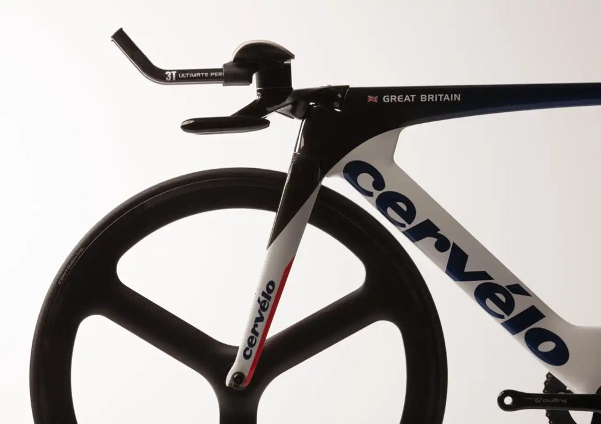
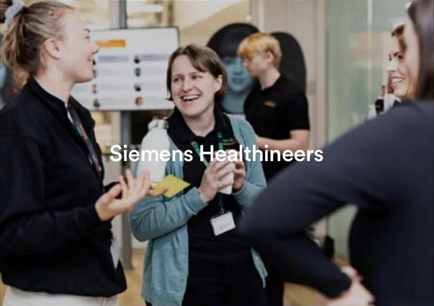
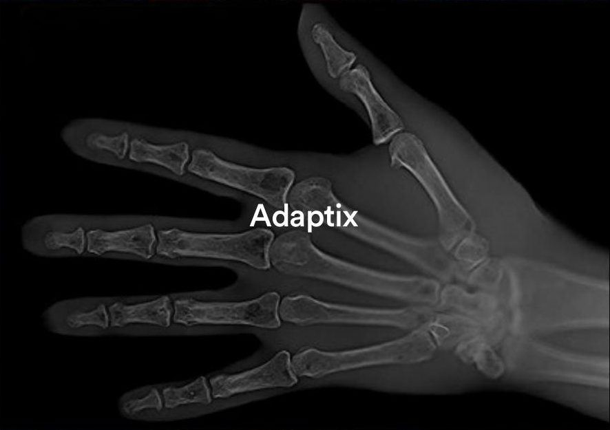
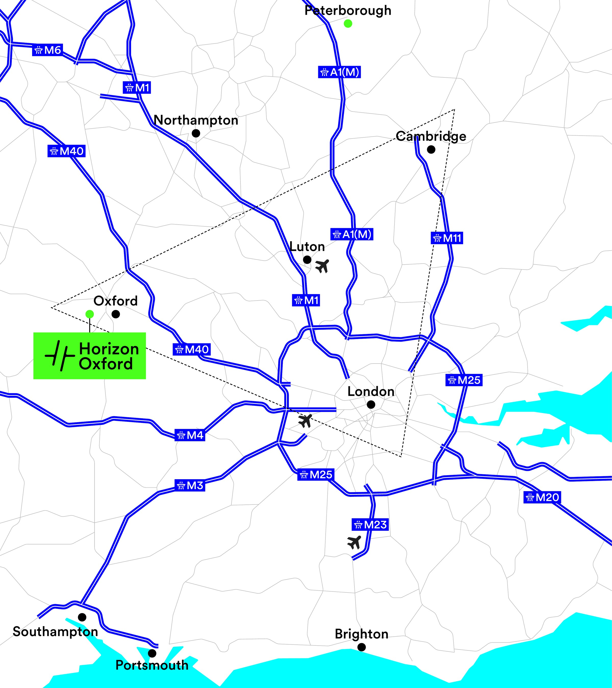
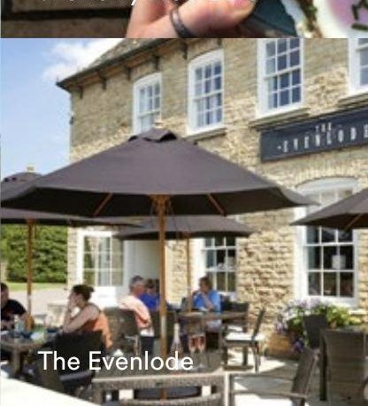
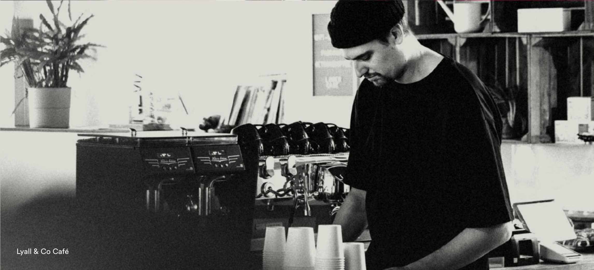

Location map



a total
cluster

in the very best
possible shape.
Situated just a couple of minutes off the A40 and equidistant from Oxford and Witney, Horizon Oxford provides easy access to desirable local villages along with access to the wealth of talent inside the UK's 'Golden Triangle'.
Driving from Horizon Oxford (OX29 4TP)
- Witney6 miles
- Oxford9 miles
- Abingdon10 miles
- Bicester15 miles
- Swindon28 miles
- London Heathrow51 miles
- Central London63 miles
- Birmingham73 miles
- Cambridge103 miles
Train travel times from Oxford Station
- Swindon14 mins
- Reading21 mins
- Coventry46 mins
- London Paddington49 mins
- Birmingham1 hour
- Southampton1 hour 6 mins
- Bristol Temple Meads1 hour 9 mins
- London Marylebone1 hour 9 mins
- London Heathrow1 hour 14 mins
Source: maps.google.co.uk
on your
doorstep
The charming Eynsham High Street is just a 7 minute stroll from Horizon Oxford. Here you'll find a plethora of amenities, from coffee shops, cafés, barbers and convenience stores.
Not to mention the several pubs where you'll be spoilt for choice when grabbing a hearty lunch or a post-work drink.


a nerd magnet
Eynsham and the wider Oxford corridor sit at the heart of the UK's 'Golden Triangle' — home to a deep, highly skilled talent pool spanning engineering, life sciences and technology.